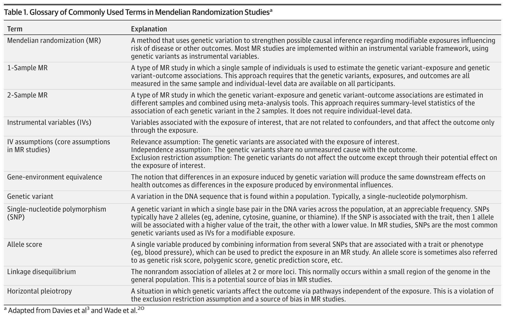
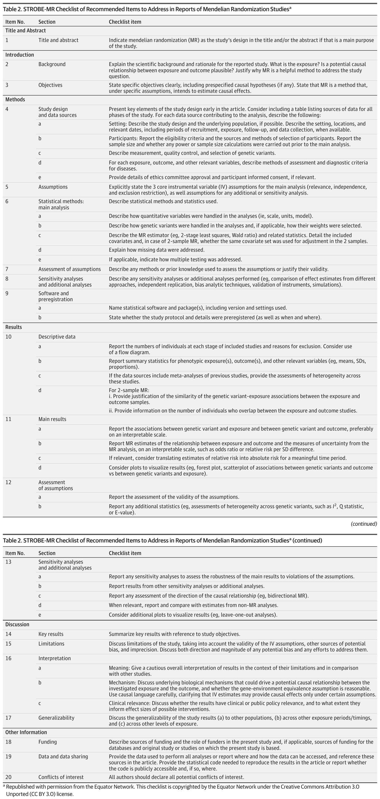

0. 阅读导引：这份指南是关于什么的？
2021年10月，JAMA 发表了一篇看似"元研究"（meta-research）的特殊通讯——它不报告任何新的科学发现，而是为一种日益流行的流行病学研究方法制定了报告标准。这就是 STROBE-MR：一份关于如何完整、透明地报告孟德尔随机化（Mendelian Randomization, MR）研究的指南。
一句话概括
如果把 MR 研究比作一座建筑，STROBE-MR 就是一份施工验收清单。它不教你如何设计或施工（那是方法学家的事），但告诉你：提交验收报告时，哪些东西必须写清楚，才能让别人相信这座建筑确实稳固。
📖 原文出处：阅读导引0.1 什么是孟德尔随机化（MR）？
想象你想知道"喝牛奶是否能让孩子长高"。如果直接比较喝牛奶和不喝牛奶的孩子，你会发现喝牛奶的孩子确实更高——但这是因为牛奶，还是因为能经常喝牛奶的孩子营养条件更好？这就是混杂（confounding）问题。
MR 的巧妙之处在于：它用基因变异作为"替身"。比如，有些人体内乳糖酶基因的变异让他们天生更倾向于喝牛奶。这个基因变异在人群中是随机分配的（类似于抛硬币），不依赖于家庭经济条件。所以，如果用这个基因变异来模拟"喝牛奶"，比较携带不同基因型的人群，就可以更接近因果推断。
📖 原文出处：阅读导引孟德尔随机化（Mendelian Randomization, MR）
一种利用与可改变暴露因素（modifiable exposure）相关的遗传变异来评估该暴露与结局之间可能因果关系的方法。其核心目标是减少观察性研究中来自混杂和反向因果的偏倚。大多数 MR 研究在工具变量（instrumental variable, IV）框架下实现，以遗传变异作为工具变量。
📖 原文出处：阅读导引0.2 什么是报告指南？
报告指南不是研究设计指南，也不评判研究质量。它只做一件事：规定论文中应当报告哪些信息。其基本假设是：只有先让读者看清楚研究者做了什么，读者才能判断这项研究是否可信。
报告指南能发现什么问题？
STROBE-MR 制定过程中，专家们对2018年发表的20篇 MR 文章进行了试审。结果触目惊心：
- 0/10 双样本 MR 研究详细描述了暴露和结局的研究人群
- 仅 50% 报告了检验和校正多效性的努力
- 55% 缺失基因型数据填补或次要等位基因频率阈值的细节
- 仅 50% 报告了遗传工具变量的强度信息
- 50% 缺乏临床或公共卫生意义的讨论
- 65% 未讨论研究结果的推广性
这就像是交了作业但不写解题步骤——老师根本没法判断你是在推理还是在瞎猜。
📖 原文出处：阅读导引0.3 本指南适合谁阅读？
| 读者 | 读这份详解可以收获什么？ |
|---|---|
| 🩺 临床研究者（想做MR） | 了解投稿时一份完整 MR 论文应包含哪些要素 |
| 📝 期刊审稿人 / 编辑 | 获得系统的审稿检查框架 |
| 📖 医学生 / 研究生 | 理解 MR 方法的全貌和关键假设 |
| 📊 方法学研究者 | 了解 MR 报告标准的前沿共识 |
STROBE-MR 的本质：一份包含 20个主条目 + 30个子条目的报告清单，覆盖标题摘要、引言、方法、结果、讨论和其他信息六大板块。它不是方法学教材，而是透明报告的底线标准。
📖 原文出处：阅读导引1. 背景与动机：为什么要制定 STROBE-MR？
想象 MR 研究是一片快速生长的森林。2003年全年只有1篇 MR 论文发表，到2020年这个数字飙升至>800篇/年。但森林长得太快，路标没跟上——很多论文连核心假设是否检验过都说不清楚。STROBE-MR 就是要为这片森林立路标。
📖 原文出处：阅读导引1.1 MR 研究的爆发式增长
MR 方法的受欢迎程度可以从几个数字看出：从2003年的1篇报告到2020年的800+篇。MR 已被应用于极其多样的研究问题，例如：
- IL-6 受体抑制与 COVID-19 预后
- 大麻使用与精神分裂症风险
- 教育水平和智力与阿尔茨海默病风险
这种增长的驱动力是什么？主要是大规模 GWAS 汇总数据的公开可获得性——研究者无需自己收集数据，利用公开的 GWAS 汇总统计量即可进行双样本 MR 分析，门槛大幅降低。
1.2 报告不完整的普遍问题
门槛降低的同时也带来了质量问题。论文引用了多项系统综述的证据（Davies et al. 2013; Boef et al. 2015; Swanson & Hernán 2013），一致表明：
许多 MR 研究报告未能清晰陈述或检验 MR 方法的各种假设，并且在数据来源方面提供了不充分的细节。
报告不完整意味着什么？
如果读者无法从论文中判断：（1）工具变量假设是否满足；（2）敏感性分析做了什么；（3）数据从哪里来——那么无论分析本身多么精良，结论的可信度都无从判断。这就是"报告质量限制因果推断可信度"的含义。
📖 原文出处：背景与共识方法1.3 STROBE-MR 的定位
STROBE-MR 是原始 STROBE 声明（Strengthening the Reporting of Observational Studies in Epidemiology, von Elm et al. 2007）的专门扩展。STROBE 是观察性流行病学研究的通用报告指南（22项条目 + 18子项），但它不包含 MR 特有的内容——比如工具变量假设、多效性检验、遗传变异选择标准等。
STROBE-MR 以 STROBE 为出发点，对其进行了彻底改造：最终包含 20 个主条目（比 STROBE 少2个）和 30 个子条目（比 STROBE 多12个）。只有1个子条目（6d）没有改动，其余全部针对 MR 进行了修改或新增。
- MR 研究数量爆发但报告质量参差不齐，催生了对专门报告指南的需求
- STROBE-MR 是 STROBE 的扩展，专门针对 MR 的独特要求
- 20项主条目 + 30项子条目，覆盖论文全文
2. STROBE-MR 的制定方法
制定一份好的报告指南本身也有"指南"——EQUATOR Network 的方法论框架。STROBE-MR 的制定严格遵循了这一框架，经历了文献回顾→清单起草→预试验→共识会议→公开咨询→修改定稿的完整流程，历时3年（2018-2021）。
📖 原文出处：背景与共识方法2.1 制定流程总览（EQUATOR 框架）
EQUATOR（Enhancing the Quality and Transparency of Health Research）网络为报告指南的制定提供了方法论框架。STROBE-MR 的制定流程可以分为以下阶段：
项目启动
文献回顾
Bristol 共识会议
17位专家，2天
预印本发布
公开讨论
视频会议
反复修订
最终定稿
JAMA 发表
2.2 文献回顾：找到了什么？
核心团队在 PubMed 中检索了题目中包含 "instrumental variable" 或 "mendelian randomization" 且标题/摘要中含有 "reporting" 的文章。最后一次更新检索是2021年7月8日。
结果发现：专门讨论 IV/MR 研究报告的文章寥寥无几。大部分相关文章在2019年5月会议前被综述（Davies 2013; Boef 2015; Swanson 2013），会后又有两篇新的系统综述发表（Lor et al. 2019 关于肿瘤学 MR 研究; Diemer et al. 2021 关于产前暴露 MR 研究），进一步确认了报告缺陷的普遍性。
2.3 共识会议与专家讨论
2019年5月16-17日，在布里斯托大学 MRC Integrative Epidemiology Unit 举行了为期两天的面对面会议。17位参与者涵盖了：
- MR 方法学家
- MR 研究设计用户
- 过往报告指南（STROBE、STREGA 等）的制定者
- 期刊编辑（来自 JAMA 和 BMJ）
会议如何组织？
会议前，核心团队用草稿清单对20篇2018年发表的 MR 文章进行了试审（10篇单样本 + 10篇双样本）。这20篇是从404篇候选文章中随机选取的（如果抽到的不是原创研究，则继续随机抽取直到凑够20篇）。
会议中，每个条目被分配给一位"条目负责人"（item leader），按其专业领域负责最终措辞和在 Explanation & Elaboration 文档中提供示例。
📖 原文出处：STROBE-MR的制定过程需要注意：STROBE-MR 的制定未进行正式的 Delphi 流程（即多轮匿名专家投票）。20篇文章的试审规模也是实用主义的（能在会前详细审阅即可），不是系统综述。这些是方法学上的实际限制，但不影响指南的实用性。
📖 原文出处：STROBE-MR的制定过程2.4 预印本公开咨询
草稿清单于2019年7月以预印本形式发表于 PeerJ Preprints。截至2021年7月，已被浏览 5000+次，下载 3500+次。收到的评论来自预印本平台、Twitter 以及第4届 MR 会议（2019年7月，Bristol）的现场讨论。所有评论在核心团队的视频会议中被逐条讨论并适当纳入清单修订。
2.5 配套文档：Explanation & Elaboration（E&E）
STROBE-MR 本身只是一个清单。为了帮助使用者理解每条目的理由和良好报告的示例，团队同时编写了 Explanation & Elaboration (E&E) 文档（发表于 BMJ 2021;375:n2233）。E&E 内容包括：
- 每个条目的理由说明
- 来自已发表文章的"良好报告"示例
- 一个术语表（Glossary）——基于 Davies et al. (2018) 和 Wade et al. (MR Dictionary)
- 关于 MR 关键假设、假设评估/证伪以及因果效应估计解读的补充教育材料
本文（JAMA 2021）中收录了术语表的精简版（Table 1），涵盖了最核心的13个 MR 术语。
- 制定过程遵循 EQUATOR 框架，历时3年
- 17位国际专家参与，覆盖方法学、应用、编辑三大领域
- 清单经过试审、共识会议和公开咨询三轮打磨
- 配套 E&E 文档提供了详细理由和良好报告示例
3. MR 核心概念速览
在进入检查清单之前，有必要先建立 MR 的核心概念框架。以下内容主要来自 STROBE-MR 的 Table 1（术语表），并结合了解读。原文术语表完整截图如下，可对照下文 3.1–3.5 各节的展开解读逐一理解：

原论文 Table 1：MR 研究常用术语表（Glossary of Commonly Used Terms in MR Studies）。两列结构：左列术语、右列解释，自上而下共 11 个术语——MR 本身、1-Sample MR、2-Sample MR、工具变量（IVs）、IV 三大假设、基因-环境等价性、遗传变异、SNP、等位基因评分（Allele score）、连锁不平衡（LD）、水平多效性。怎么读：这张表是 MR 领域公认术语的"官方定义"来源（改编自 Davies et al. 与 Wade et al. 两篇方法学经典文献），写 MR 论文时引用术语定义应以它为准。与正文的关系：本节 3.1–3.5 依次展开表中加粗的五个核心概念（三大假设、IV、SNP、LD、水平多效性），每节末尾的"原文出处"标注可回溯到本表对应行。
图源：Skrivankova et al., JAMA (2021), CC BY 3.0（EQUATOR Network 授权再版）。
3.1 工具变量三大假设
工具变量就像法庭上的"证人"。一个合格的证人必须满足三个条件：（1）他确实目击了事件（与暴露相关）；（2）他与被告没有利益关系（与混杂无关）；（3）他只能通过自己的目击来影响判决，而不是通过贿赂法官（只通过暴露影响结局）。
📖 原文出处：工具变量三大假设相关性假设
(Relevance)
遗传变异必须与暴露因素相关
$\text{SNP} \rightarrow \text{暴露}$
独立性假设
(Independence)
遗传变异不与任何混杂因素共享未测量原因
$\text{SNP} \perp \text{混杂}$
排他性约束
(Exclusion Restriction)
遗传变异仅通过暴露影响结局
$\text{SNP} \rightarrow \text{暴露} \rightarrow \text{结局}$
在工具变量框架下，令 $G$ 为遗传变异（工具变量），$X$ 为暴露，$Y$ 为结局，$U$ 为未测量混杂：
- 相关性： $G \not\perp X$（$G$ 与 $X$ 统计相关）
- 独立性： $G \perp U$（$G$ 与混杂无关）
- 排他性： $G \perp Y \mid (X, U)$（给定 $X$ 和 $U$ 后，$G$ 与 $Y$ 独立）
三个假设合在一起，保证了 $G \to X \to Y$ 的因果链是干净的，没有"后门路径"或"直接捷径"。
📖 原文出处：工具变量三大假设3.2 单样本 vs 双样本 MR
| 特征 | 单样本 MR（1-Sample MR） | 双样本 MR（2-Sample MR） |
|---|---|---|
| 数据来源 | 同一组个体 | 两组不同的样本（来自不同研究） |
| 所需数据类型 | 个体层面数据（individual-level data） | 汇总统计量（summary-level statistics） |
| $G \to X$ 和 $G \to Y$ 关联 | 在同一人群估算 | 分别在两个独立人群估算，然后用荟萃分析工具合并 |
| 优点 | 更灵活，可做更复杂的建模 | 可利用公开 GWAS 数据，不需要个体数据 |
| 关键陷阱 | 弱工具变量偏倚更严重 | 样本重叠可能导致偏倚 |
单样本 MR 的典型场景
假设你想研究 HDL 胆固醇对冠心病的因果效应，而你恰好有一个同时测量了基因型、HDL 水平和冠心病结局的前瞻性队列（例如 UK Biobank）：
- 一个数据源：UF Biobank 中，从同一批参与者收集基因型（GWAS 芯片）、暴露（HDL 胆固醇水平）和结局（冠心病事件随访记录）数据
- 两阶段最小二乘法（2SLS）：第一步——用 SNP 预测 HDL 水平；第二步——用预测的 HDL 水平去回归冠心病风险
- MR 估计：2SLS 的第二阶段回归系数即为 HDL→冠心病的因果效应估计。可以方便地添加协变量（年龄、性别）和做亚组分析
单样本 MR 的优势在于灵活性和一致性——因为所有数据来自同一人群，你不需要担心"暴露 GWAS 是欧洲人而结局 GWAS 是东亚人"这样的种族不匹配问题。但代价是"弱工具变量偏倚"更严重（见下表），且你必须自己收集完整的三合一数据。
📖 原文出处：单样本vs双样本MR双样本 MR 的典型场景
假设你想研究 BMI（身体质量指数）对冠心病的因果效应：
- 暴露样本：从 GIANT 联盟的 BMI GWAS（>70万人）获取 SNP→BMI 的关联汇总统计
- 结局样本：从 CARDIoGRAMplusC4D 联盟的冠心病 GWAS（>18万人）获取 SNP→冠心病的关联汇总统计
- MR 分析：用逆方差加权法（IVW）等方法将两套汇总统计量合并，得到 BMI→冠心病的因果效应估计
这比收集同时测量了基因型、BMI 和冠心病结局的队列数据要容易得多。
📖 原文出处：单样本vs双样本MR3.3 水平多效性与连锁不平衡
水平多效性就像是证人"绕过了目击这个环节，直接去贿赂了法官"——基因变异不经过暴露就直接影响结局，违反了排他性约束。
连锁不平衡（LD）则像是"认错了证人"——你以为在传唤证人A（你选的 SNP），但实际上证人B（与你选的 SNP 高度相关的另一个 SNP）也跟着进来了，而证人B可能与结局有别的关联路径。
📖 原文出处：水平多效性与连锁不平衡- 水平多效性 (Horizontal Pleiotropy)：遗传变异通过不依赖于暴露的独立通路影响结局。违反排他性约束假设。
- 连锁不平衡 (Linkage Disequilibrium, LD)：两个或多个基因座上的等位基因的非随机关联。在一般人群中通常发生在基因组的一个小区域内。
3.4 基因-环境等效性
这个假设说的是：通过基因变异引起的暴露变化，产生的健康效应应该等同于通过环境干预（如生活方式改变、药物）引起的同样幅度的暴露变化。
例如：如果你的 BMI 因基因原因比人群平均高 1 kg/m²，这 1 kg/m² 对你心血管风险的影响，应该和因饮食习惯导致的 1 kg/m² 增加具有相同的效应。如果这个假设不成立，那么 MR 估计出的因果效应对实际的公共卫生干预的指导价值就会受限。
📖 原文出处：MR核心概念速览- MR 的核心是三大 IV 假设：相关性、独立性、排他性
- 单样本 vs 双样本是最基本的分类，影响数据需求和偏倚结构
- 水平多效性是排他性假设的主要威胁；LD 是相关性和独立性假设的潜在威胁
- 基因-环境等效性是 MR 结果向实际干预推广的桥梁假设
4. STROBE-MR 检查清单详解
20 个条目听起来很多，但它们的逻辑是简单而线性的——跟随一篇标准论文的结构：标题摘要→引言→方法→结果→讨论→其他。每个条目都在问同一个核心问题："读者能从你的论文中获得做这个判断所需的全部信息吗？"
📖 原文出处：MR核心概念速览4.1 Title & Abstract（条目1）
条目1：标题与摘要
清单要求：在标题和/或摘要中明确指出 MR 是研究的设计方法（如果这是研究的主要目的之一）。
📖 原文出处：STROBE-MR检查清单详解这看起来微不足道，但在数据库检索中极其重要。如果一个读者在 PubMed 中搜索 "mendelian randomization"，你的论文如果标题和摘要中没有出现这个术语，就可能根本不会被检索到。这也是为什么原始 STROBE 要求标题中标明研究设计类型（队列研究、病例对照研究等）。
📖 原文出处：STROBE-MR检查清单详解良好报告实践
标题示例："Body Mass Index and Risk of Coronary Heart Disease: A Two-Sample Mendelian Randomization Study"
摘要示例："...We conducted a two-sample Mendelian randomization study using summary statistics from the GIANT consortium (exposure) and CARDIoGRAMplusC4D consortium (outcome) to assess the potential causal effect of BMI on coronary heart disease risk."
📖 原文出处：STROBE-MR检查清单详解4.2 Introduction（条目2-3）
条目2：背景与理由
解释研究的科学背景和理由。回答三个问题：（1）暴露因素是什么？（2）暴露与结局之间的潜在因果关系在生物学上是否合理？（3）为什么 MR 是解决这个研究问题的有用方法？
📖 原文出处：STROBE-MR检查清单详解条目2中最特别的要求是"为什么 MR 是有用方法"。这意味着你不能只说"我们做了 MR"，而必须解释：在这个具体研究问题中，常规观察性分析存在什么样的混杂或反向因果问题，使得 MR 能提供额外的因果推断价值。这和 Hernán (2018) 的建议一脉相承——研究者应该在引言中就明确因果推断的意图和理由。
📖 原文出处：STROBE-MR检查清单详解条目3：目标
清晰陈述具体目标，包括预先设定的因果假设（如有）。说明 MR 是一种在特定假设下旨在估计因果效应的方法。
📖 原文出处：STROBE-MR检查清单详解"预先设定"（prespecified）这个词很关键。它为读者提供了一个判断基准——哪些分析是计划内的主分析，哪些是事后探索。这有助于防止将探索性发现包装成验证性结论。
📖 原文出处：STROBE-MR检查清单详解4.3 Methods — 研究设计与数据来源（条目4）
条目4：研究设计与数据来源（含6个子条目 4a-4f）
📖 原文出处：STROBE-MR检查清单详解条目4是方法部分中最长、最详细的一个条目。它包含了6个子条目：
良好报告：数据来源表
STROBE-MR 建议在方法部分早期（甚至作为第一个表）提供一个数据来源一览表：
| 分析阶段 | 数据来源/联盟 | 样本量 | 人群 | GWAS参考文献 |
|---|---|---|---|---|
| SNP选择 | GIANT BMI GWAS | ~700,000 | 欧洲裔 | Locke et al. 2015 |
| 暴露（G→X） | GIANT BMI GWAS | ~700,000 | 欧洲裔 | Locke et al. 2015 |
| 结局（G→Y） | CARDIoGRAMplusC4D | 184,305 | 欧洲裔 | Nikpay et al. 2015 |
对于双样本 MR，条目4子项中特别强调了两个额外要求（在结果部分的条目10中检查）：
- 证明暴露样本和结局样本中 SNP-暴露关联的相似性
- 报告两样本中重叠个体的数量（样本重叠可能导致偏倚）
4.4 Methods — 假设与统计方法（条目5-9）
条目5：假设
明确陈述主分析的三个核心 IV 假设（相关性、独立性、排他性约束），以及任何额外或敏感性分析的假设。
📖 原文出处：STROBE-MR检查清单详解这是 STROBE-MR 最核心的要求之一。试审发现许多 MR 文章根本没有明确列出这三大假设。STROBE-MR 的立场是：不陈述假设 = 不承认假设需要被满足 = 读者无法判断你的结论建立在什么条件之上。
📖 原文出处：STROBE-MR检查清单详解条目6：主分析的统计方法（含5个子条目 6a-6e）
| 子条目 | 内容 |
|---|---|
| 6a | 定量变量在分析中如何处理的（尺度、单位、模型形式） |
| 6b | 遗传变异在分析中如何处理；如适用，其权重如何选择（如等位基因评分中选择的权重方法） |
| 6c | 描述 MR 估计量（如两阶段最小二乘法 2SLS、Wald 比值法）及相关统计量。详细列出纳入的协变量；双样本 MR 时，是否两个样本使用了相同的协变量集 |
| 6d | 缺失数据如何处理（原 STROBE 条目，唯一未修改） |
| 6e | 如适用，说明如何处理多重检验 |
条目7：假设评估
描述用于评估假设或论证假设有效性的任何方法或先验知识。
📖 原文出处：STROBE-MR检查清单详解条目8：敏感性分析与额外分析
描述任何额外的敏感性分析或附加分析。例如：比较不同方法（IVW、MR-Egger、加权中位数等）的效应估计、独立重复、偏倚分析技术（如 E-value）、工具变量验证、模拟研究。
📖 原文出处：STROBE-MR检查清单详解条目7和8共同构成了 MR 研究的"假设诚信体系"：
- 条目7 要求你说清楚你是如何检验假设的（或至少论证为什么你认为假设是合理的）
- 条目8 要求你在主分析之外，再做一些分析来测试你的结果对假设违反的敏感程度
换句话说：不能只说"我假设排他性成立"，而要展示"我做了这些事来检查排他性是否可能被违反，以及如果被违反了会怎样"。
📖 原文出处：STROBE-MR检查清单详解条目9：软件与预注册
列出使用的统计软件和包（包括版本和设置）。说明研究方案和细节是否经过预注册（以及何时、在何处注册）。
📖 原文出处：STROBE-MR检查清单详解良好报告：敏感性分析策略
"We performed the following sensitivity analyses to assess the robustness of our findings: (i) MR-Egger regression to detect and correct for directional pleiotropy; (ii) weighted median estimator, which is consistent when up to 50% of the information comes from invalid instruments; (iii) MR-PRESSO to detect and remove outlier SNPs; (iv) leave-one-out analysis to identify influential variants. We also calculated the F-statistic to assess instrument strength (F > 10 indicating adequate strength)."
📖 原文出处：STROBE-MR检查清单详解4.5 Results（条目10-13）
条目10：描述性数据（含4个子条目 10a-10d）
| 子条目 | 内容 |
|---|---|
| 10a | 报告各阶段纳入的个体数及排除原因（建议使用流程图） |
| 10b | 报告表型暴露、结局及其他相关变量的汇总统计（均值、标准差、比例等） |
| 10c | 如数据来源包含既往研究的荟萃分析，提供这些研究间异质性的评估 |
| 10d | 双样本 MR 专属：(i) 提供暴露和结局样本中 SNP-暴露关联相似性的论证；(ii) 报告两样本中重叠个体的数量 |
条目11：主要结果（含4个子条目 11a-11d）
- 11a：报告 SNP-暴露 关联和 SNP-结局 关联，最好在可解释的尺度上（如每个效应等位基因/每SD的 OR 或 β）
- 11b：报告 MR 估计的 暴露-结局 因果关系及不确定性度量，在可解释的尺度上（如每 SD 差异的 OR 或相对风险）。如相关，考虑将相对风险转化为有意义的绝对风险
- 11c：考虑用图形可视化结果（森林图、遗传变异-结局 vs 遗传变异-暴露的散点图）
- 11d：（原始表2中列为11d）如适用
条目11中一个细粒度但重要的要求是"在可解释的尺度上"报告结果。例如：如果暴露是 BMI，MR 估计的是 "BMI 每增加 1 kg/m² 对冠心病风险的 OR"。但如果 BMI 的基因工具能解释的变异很小（比如只有 0.3 SD），那么直接报告"每等位基因"的效应就几乎没有实际意义。好的做法是报告 "每 SD BMI 增加"的效应，这样临床医生可以直接解读。
📖 原文出处：STROBE-MR检查清单详解条目12：假设评估
报告假设有效性的评估。报告任何额外统计量（如跨遗传变异的异质性评估：$I^2$、Q 统计量或 E-value）。
📖 原文出处：STROBE-MR检查清单详解条目13：敏感性分析与额外分析（含5个子条目 13a-13e）
| 子条目 | 内容 |
|---|---|
| 13a | 报告评估主要结果对假设违反稳健性的敏感性分析 |
| 13b | 报告其他敏感性分析或额外分析的结果 |
| 13c | 报告对因果方向性的评估（如双向 MR） |
| 13d | 相关时，报告并比较非 MR 分析的估计值（如传统观察性关联） |
| 13e | 考虑额外的可视化图形（如留一法分析图） |
良好报告：双向 MR
"To assess the direction of the causal relationship, we performed bidirectional MR: first treating BMI as exposure and coronary heart disease as outcome, then reversing the roles. A causal effect in the reverse direction (CHD → BMI) would suggest reverse causation."
📖 原文出处：STROBE-MR检查清单详解4.6 Discussion（条目14-17）
条目14：关键结果
参照研究目标总结关键结果。
📖 原文出处：STROBE-MR检查清单详解条目15：局限性
讨论研究的局限性，需考虑：（1）IV 假设的有效性；（2）其他潜在偏倚来源；（3）不精确性。同时讨论潜在偏倚的方向和大小，以及为处理它们所做的任何努力。
📖 原文出处：STROBE-MR检查清单详解条目15超越了简单的"承认局限性"——它要求研究者明确讨论偏倚的方向（偏向零还是远离零？）和大小（大致有多大的数量级影响？），这比含糊地说"可能存在残余混杂"有用得多。
条目16：解读（含3个子条目 16a-16c）
| 子条目 | 内容 |
|---|---|
| 16a | 含义：在局限性背景下，给出谨慎的总体结果解读，并与其他研究比较。 |
| 16b | 机制：讨论驱动暴露与结局间潜在因果关系的潜在生物学机制，以及基因-环境等效性假设是否合理。谨慎使用因果语言（causal language），明确 IV 估计仅在特定假设下才能提供因果效应。 |
| 16c | 临床相关性：讨论结果是否具有临床或公共政策相关性，以及它们在多大程度上能为可能的干预效应大小提供信息。 |
因果语言的审慎使用
条目16b 中明确要求"谨慎使用因果语言"。这是流行病学中长期争议的话题——观察性研究（即便是 MR）是否应该使用"cause"/"causal"等词汇。STROBE-MR 的立场不是禁止，而是要求在使用因果语言的同时明确告知读者这种因果推断建立在哪些假设条件之上。这是一种"负责任使用"的立场（参见 Hernán 2018, Am J Public Health）。
📖 原文出处：STROBE-MR检查清单详解条目17：推广性 (Generalizability)
讨论研究结果在以下方面的推广性：(a) 到其他人群；(b) 跨不同的暴露时期/时间点；(c) 跨不同的暴露水平。
📖 原文出处：STROBE-MR检查清单详解条目17 将通常笼统的"讨论推广性"拆成了三个明确的维度：
- (a) 人群推广性：大多数 MR 研究基于欧洲裔人群 GWAS。结果适用于亚洲裔、非洲裔人群吗？（LD 结构不同，等位基因频率不同）
- (b) 时间推广性：遗传变异代表的是终身暴露差异。如果暴露只在某个关键发育窗口期起作用（如胎儿期），终身效应的线性假定可能不成立。
- (c) 水平推广性：遗传变异通常代表的是小幅度暴露差异（e.g., 0.1 SD BMI）。将这种小效应的线性外推到大幅度干预（e.g., 减重手术后的 5 SD BMI 变化）是否合理？
4.7 Other Information（条目18-20）
18: 资助 | 19: 数据与数据共享 | 20: 利益冲突
| 条目 | 内容 |
|---|---|
| 18 | 描述资助来源及资助者在研究中的角色。如适用，也要说明数据库和原始研究的资助来源。 |
| 19 | 提供所有分析所用的数据，或报告数据可以从哪里以及如何获取，并在文章中引用这些来源。提供重现文章结果所需的统计代码，或报告代码是否可公开获取及其位置。 |
| 20 | 所有作者都应声明所有潜在的利益冲突。 |
条目19 — 数据与代码共享
这是 STROBE-MR 相对原始 STROBE 新增的重要条目。MR 分析常常依赖多个公开 GWAS 数据源，计算方法复杂（多个 R 包、多种敏感性分析），如果没有共享代码，同行复现几乎是不可能的。条目19明确要求研究者：要么公开你的数据和代码，要么说明如何获取它们。
📖 原文出处：STROBE-MR检查清单详解STROBE-MR 原文的 Table 2 检查清单完整原文如下（横跨原文两页，上方为条目 1–12，下方自条目 13 起续排），可对照上文 4.1–4.6 的逐条解读回看：

原论文 Table 2：STROBE-MR 检查清单（Recommend Items to Address in Reports of MR Studies）。四列结构：Item No.（条目号）、Section（所属部分）、Checklist item（条目内容）。上半部分（原文 p5）为条目 1–12：标题摘要（条目 1，标题/摘要中注明 MR 设计）、引言（条目 2 背景、条目 3 目标）、方法（条目 4–9：研究设计与数据来源、IV 假设陈述、统计方法主分析 a–e、假设评估、敏感性分析与软件版本）。下半部分（原文 p6，"(continued)"）为条目 13–20：结果（条目 13 敏感性分析报告 a–e）、讨论（条目 14 关键结果、15 局限性、16 解释 a–c、17 可推广性）、其他信息（条目 18 资助、19 数据与代码共享、20 利益冲突）。怎么读：写 MR 论文时按行自查——每一行条目都要在论文的相应部分找到明确对应的段落；读者评估一篇 MR 论文的完整性时，也可按此表逐项打勾。与正文的关系：上文第 4 节的逐条解读正是按此表的 20 个主条目展开的，本表是"检查清单"一词的原始出处。
图源：Skrivankova et al., JAMA (2021), CC BY 3.0（EQUATOR Network 授权再版）。
- 20个主条目、30个子条目覆盖论文从头到尾的所有部分
- 三大 IV 假设必须在方法部分明确陈述（条目5），在结果部分报告评估结果（条目12）
- 敏感性分析是必须的——不仅要做，还要清晰报告（条目8 + 条目13）
- 透明性贯穿始终：预注册、数据来源、软件版本、数据代码共享均应报告
- "可解释尺度"是结果报告的反复要求：让临床读者不用换算就能理解你的数字
5. STROBE-MR vs 原始 STROBE：改了什么？
原始 STROBE（2007）有 22 个主条目和 18 个子条目（共 40 个检查点）。STROBE-MR 有 20 个主条目和 30 个子条目（共 50 个检查点）。数量变化只是表象——真正重要的是内容的全面 MR 化改造。
📖 原文出处：STROBE-MR检查清单详解STROBE-MR 与原始 STROBE 相比：
- 减少了 2 个主条目，但增加了 12 个子条目
- 仅 1 个子条目（6d：缺失数据处理）未做任何修改
- 所有其他条目和子条目都被修改以适用于 MR 研究
关键变化举例
| 维度 | 原始 STROBE | STROBE-MR |
|---|---|---|
| 暴露/结局测量 | 描述所有变量的评估方法 | 额外要求描述遗传变异的测量、质量控制和选择（条目4c） |
| 偏倚控制 | 描述处理潜在偏倚来源的措施 | 明确要求列出评估三大 IV 假设的方法（条目7）和敏感性分析（条目8） |
| 数据来源 | 描述研究设置、地点、日期 | 对每一个数据来源分别描述（对双样本 MR 尤其重要） |
| 推广性 | 讨论结果的外部效度 | 分为三个维度：人群、时间、暴露水平（条目17） |
| 数据共享 | 不包含 | 新增条目，要求提供数据和代码（条目19） |
STROBE-MR 不是 STROBE 的"微调版"，而是从 MR 视角出发的彻底重写。它保留了 STROBE 的框架结构，但在每一个条目中植入了 MR 特有的概念和方法学要求。
📖 原文出处：STROBE-MR检查清单详解6. 讨论、局限与结论
6.1 实施推广计划
STROBE-MR 的发表只是第一步。论文描述了后续的推广计划：
- 鼓励期刊认可和支持使用该指南，例如通过 EQUATOR 网站提供材料
- 将指南翻译成多种语言（STROBE 已被译为中文、西班牙语、德语等8种语言）
- 随着 MR 方法学的发展（新型测序数据、家庭内设计、医疗数据库链接等）持续更新指南
- 团队将持续监测文献以维护指南内容
6.2 声明本身的局限性
使用 STROBE-MR 时应意识到的三个限制
- 不覆盖所有方法：STROBE-MR 描述了主要假设和常用评估方法，但不可能穷尽所有 MR 分析方法。这是任何指南的固有限制。
- 共识而非终稿：作为共识文件，它代表了当前最佳实践，但将随领域发展而更新。MR 方法学发展极快——新方法（如双向 MR、多变量 MR、网络 MR 等）不断涌现，指南需要周期性更新来跟上。
- 非系统综述基础：制定过程中的文献回顾和试审是实用主义驱动的，不是系统综述。未来可能需要更系统的审查来补充当前的报告缺陷证据基础。
报告指南 ≠ 质量评价工具
这是一个经常被误解的点。论文特别强调：
报告指南不是设计或实施研究的建议…清单也不是评价 MR 研究质量的工具，不应被用作此目的（da Costa et al. 2011）。
打个比方：一份菜谱列出了需要的所有食材和步骤，但照着写出来的菜谱和做出来的菜好不好吃是两回事。同样，满足 STROBE-MR 清单要求不等于研究是高质量的，但不满足则意味着读者无法评估其质量。
📖 原文出处：原文相关章节6.3 核心结论
- STROBE-MR 是第一个专门针对 MR 研究的报告指南，作为 STROBE 的扩展发布
- 它基于国际专家共识和现有实证证据（尽管不是系统综述）
- 改善 MR 研究报告可以帮助编辑、审稿人、研究者、临床医生和读者更好地评估和解读 MR 结果
- 指南不规定统一格式——顺序和格式由作者和期刊风格决定
- 它不是质量评价工具——但完整报告是质量评价的前提
所以呢？这对你的研究意味着什么？
如果你正在计划或正在撰写 MR 研究：
- 在设计阶段就参考 STROBE-MR 清单——明确预注册你的假设，确保你收集了所有需要报告的信息
- 在写作阶段逐条对照清单——每一条后面写上对应的段落号
- 在投稿阶段将完成的清单作为补充材料提交（许多期刊现在要求这样做）
- 最大的回报：一份清晰透明的报告不仅让审稿人更快地理解和接受你的工作，也让你的研究在未来系统综述和荟萃分析中更有可能被纳入